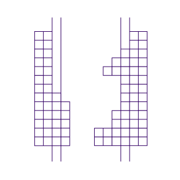

Scientific Computation Leistungen
- Frühes Auffinden der besten Strategie durch Erzeugen und Berechnen von Modellszenarien
- Quantitative Vorhersage über das Verhalten von Prototypen in der Anwendung
- Prüfen von Datenanalyse durch Modellvergleiche und Fehleranalyse
- Frühzeitiges Auffinden von Machbarkeitsgrenzen durch virtuelle Benchmarks mit einfachen bis komplexen Modellen
- ... und viele weitere Werkzeuge zum Wissenschaftlichen Berechnen gemäss Kundenanforderung
-
> siehe auch:
Computer Vision Leistungen
Referenz Projekte

Computer Vision
intelligente Algorithmen für
Video- und Bildanwendungen